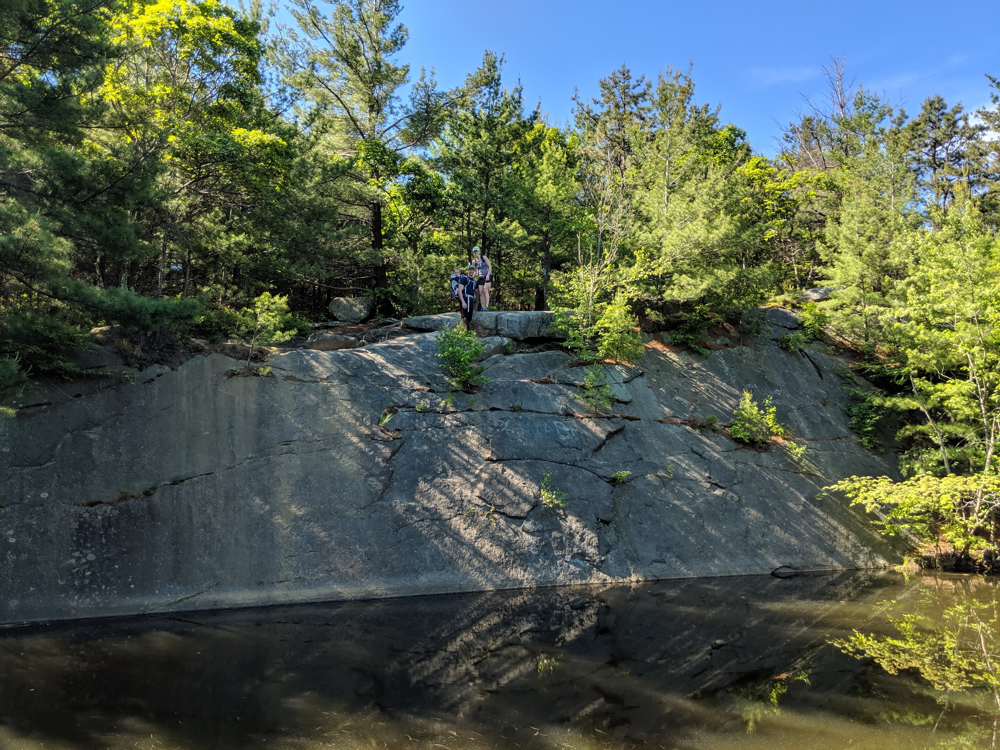
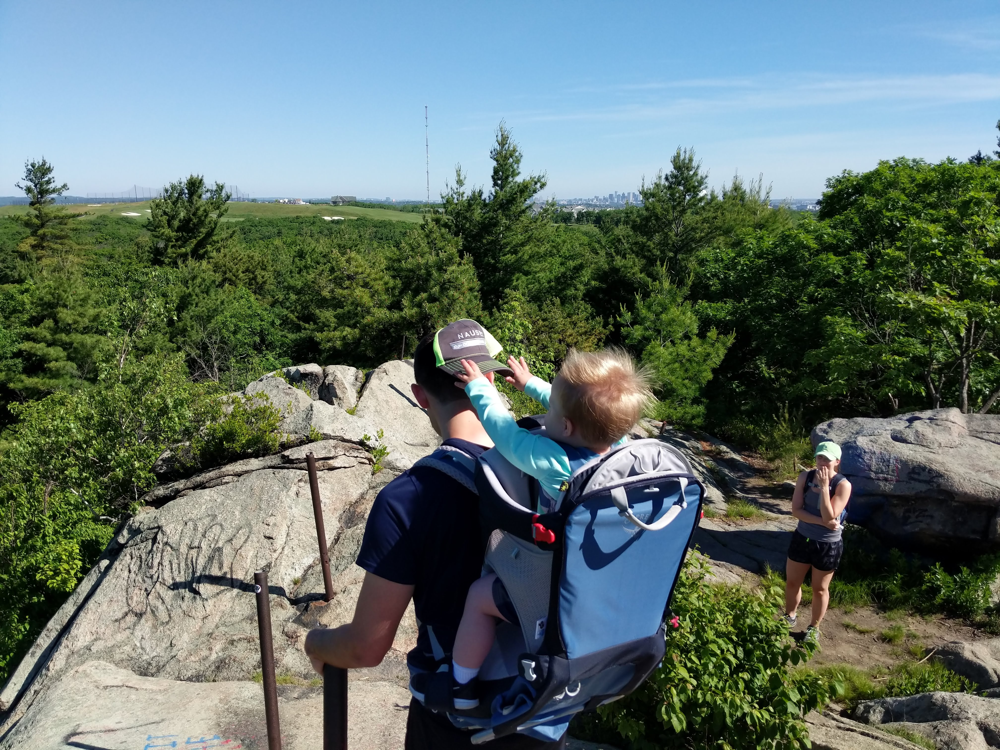
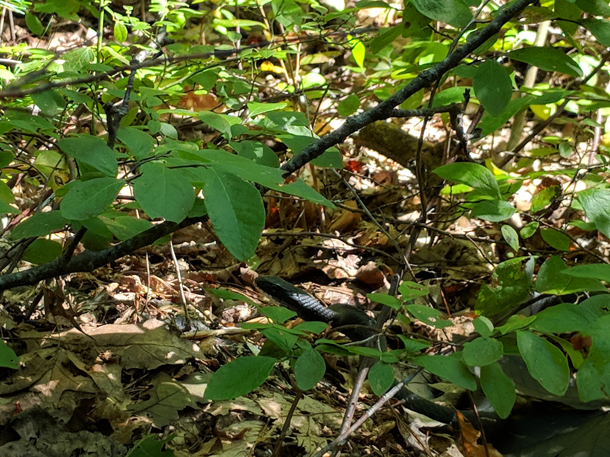

Distance
Distance Elevation
Elevation Observed Wildlife
Observed WildlifeThis was a nice hike through the Blue Hills Reservation south of Boston. My nephew, brother, ans sister-in-law enjoyed a walk up the Skyline Trail to eventually enjoy some views of the city (I'm sorry I don't have pictures of it). The Blue Hills offer a wealth of trails ranging from short walks around a pond to moderate hikes where you can get some elevation gain by goin up and down the hills.



This visit to the Blue Hills went a little longer than planned due to a lack of focus in navigating. At least my mistake crossed paths with a big black snake, probably a rat snake.


